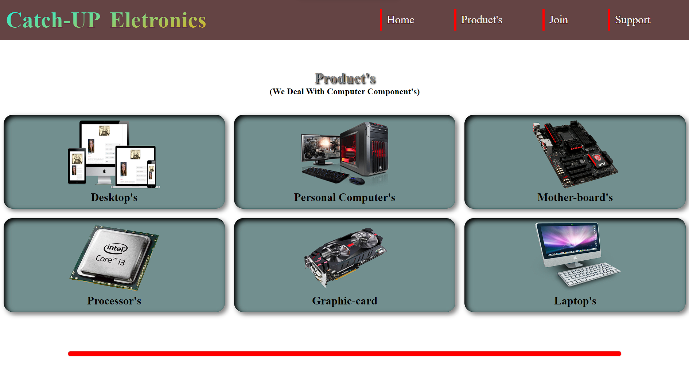
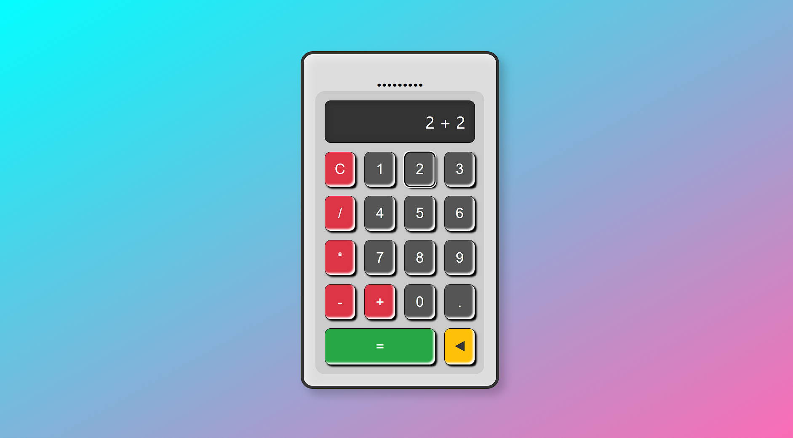
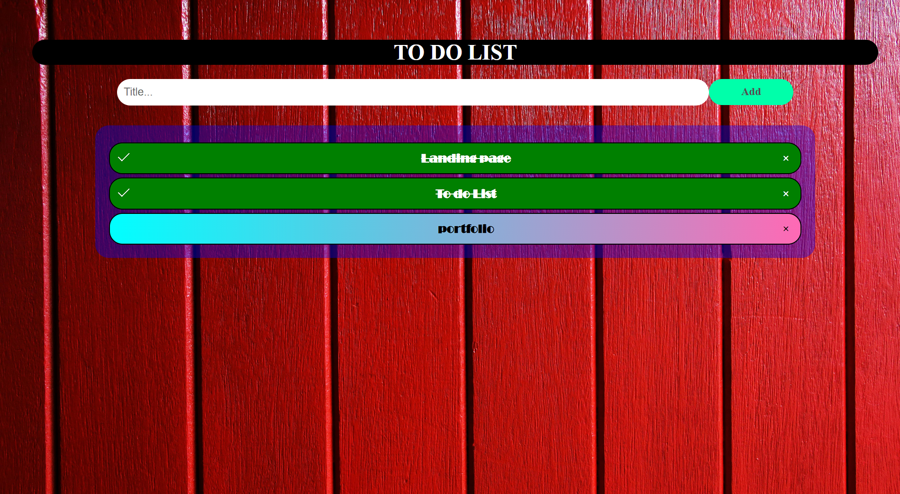
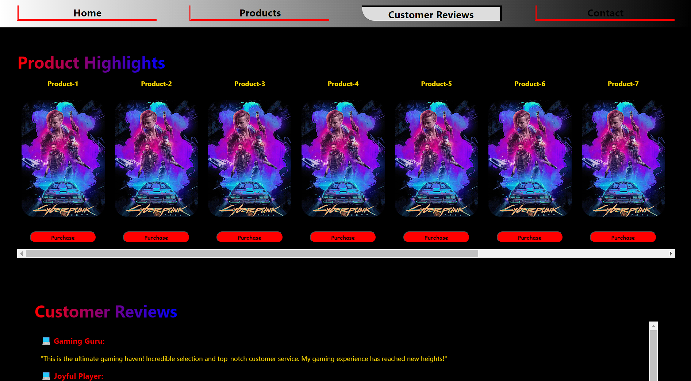
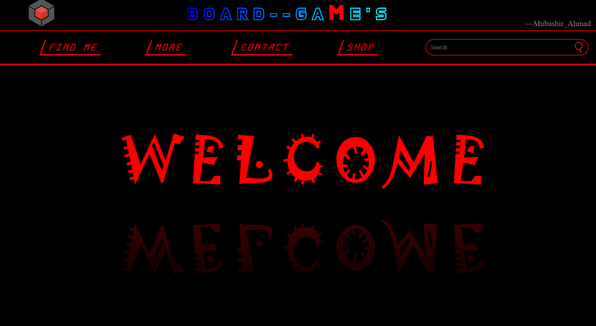

Hello! I'm Mubashir Ahmad, a passionate tech enthusiast with a keen interest in computer systems, both software and hardware. I am deeply intrigued by ethical hacking and the workings of security systems in computers. Understanding how to safeguard digital environments and ensure robust security is a key focus for me.
In addition, I am fascinated by the Internet of Things (IoT), particularly how hardware and software communicate and interact. This interest drives me to explore how different components of a system work together to create seamless and efficient technology solutions.
I have a foundational knowledge in programming languages such as Python, C/C++, and JavaScript, and I'm currently advancing my skills in PHP and MySQL. My expertise in HTML, CSS, and frameworks like Bootstrap and Bulma, combined with my ongoing studies in React.js, equips me with a strong technical background.
As a first-year honors student pursuing a Bachelor of Computer Applications (BCA) at Islamia College of Science and Commerce, I am committed to expanding my knowledge and applying my skills to innovative projects and practical applications.
Projects
Welcome to my projects section! Here, you'll find a collection of web development projects where I’ve utilized HTML, CSS, and JavaScript to build engaging and functional websites. Each project showcases my ability to create clean, responsive designs and implement interactive features using modern web technologies.
Landing Page

Discription: During my virtual internship at Octanet Pvt, I developed a landing page to effectively present the company's services and attract potential clients. The landing page features a modern, clean design with responsive elements to ensure a seamless user experience across all devices. Key elements include a hero section with a compelling call-to-action, an overview of services, and a contact form for inquiries.
Role: I was responsible for designing and implementing the layout and styling of the landing page. I utilized HTML and CSS to create interactive features and ensure a visually appealing and functional design. The project involved translating design concepts into code and optimizing the page for performance.
Web-Calculator

Discription:This project involved creating a fully functional calculator application that performs basic arithmetic operations. The calculator features a user-friendly interface with clear buttons for numbers and operations, allowing users to perform calculations with ease. The design includes responsive elements to ensure usability on various screen sizes.
Role:I designed and implemented the calculator using HTML for the structure, CSS for styling, and JavaScript for functionality. The project required developing the logic for mathematical operations, handling user input, and ensuring accurate calculations.
To-do List

Discription:This project features a To-Do List application designed to help users manage their tasks efficiently. The app allows users to add, edit, and remove tasks, as well as mark them as completed. It includes a clean and intuitive interface with functionalities such as task filtering and sorting to enhance usability.
Role:I was responsible for developing the application's user interface using HTML and CSS, and implementing the core functionality with JavaScript. The project involved creating interactive elements, managing task data, and ensuring a smooth user experience with real-time updates.
Game Shop

Discription:This project features a Game Shop application designed to showcase and sell video games directly. Users can browse a catalog of games, view detailed descriptions, and make purchases. The application provides a seamless experience for users to find and buy games without the need for a shopping cart, streamlining the purchasing process.
Role:I developed the Game Shop using HTML, CSS, and JavaScript. My role included creating the user interface, implementing the game listing and purchasing functionality, and ensuring that the application was responsive and easy to navigate. The focus was on delivering a smooth and straightforward user experience.
Board Game webpage

Discription:This project involves creating a visually engaging landing page for a Board Games website. The page is designed to attract and inform visitors about various board games, featuring sections such as game highlights, detailed descriptions, and attractive visuals. The layout is crafted to draw users in and provide a clear overview of the games available.
Role:I was responsible for designing and implementing the landing page using HTML, CSS, and JavaScript. My tasks included developing a compelling design, integrating interactive elements to enhance user engagement, and ensuring that the page was responsive and visually appealing across different devices.
Headphone shop
Discription:This project involves creating an online Headphones Shop where users can explore and purchase a variety of headphones. The application features a catalog showcasing different headphone models with images, descriptions, and pricing. Users can view detailed product information and make direct purchases, providing a streamlined shopping experience.
Role:I developed the Headphones Shop using HTML, CSS, and JavaScript. My responsibilities included designing the layout, implementing product listings, and ensuring smooth functionality for user interactions. The focus was on creating an intuitive and visually appealing interface that enhances the overall shopping experience.